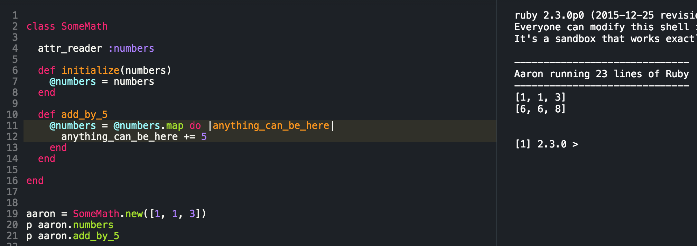

Ruby Class Sample
Here is a sample code of Class and I will explain both instance verable and local variable

Here is a sample code of Class and I will explain both instance verable and local variable
I will explain types of variables. On line: 2 I crated a blue print called "SomeMath". Each instance I wanted to use it I used the command on line: 19 and I also inserted a few numbers to my class. On line:21 I used a command called "add_by_5" to add 5 to those numbers. On the right of the screen it shows us the oringal numbers and also the numbers that we did after we ran "add_by_5".
Now I will explain how those things work. On line: 6 I crated an input for our Class by putting () between and I called it numbers. It could be called anything but I decided to call it numbers so it would be less confusing. I made it equal to @numbers. With the @ infront of the word "number" it could be passed along within the whole class and keeps its value until its modified by another method(function) inside of the Class.
On line: 10 to line: 14 is where we created a method(function) to modify the numbers we put into the Class. We created something that will add 5 to each number we put in from line:19. On the right you'll see the output.
Why use Class? Why use variable? We used class as an blueprint to take an input in this situation and modify it. We can pass the blueprint along to anyone that also wants to add 5 to their numbers. I don't know why but I could be helpful. We used a few variables inside the class and methods to make it work. Variables are used to pass information around with in the Class and Methods. We call them intance variables and local variables. But they are still variables and where they can be used sets the biggest difference between them. That is my explanation of Classes, instance variables, and local variables.